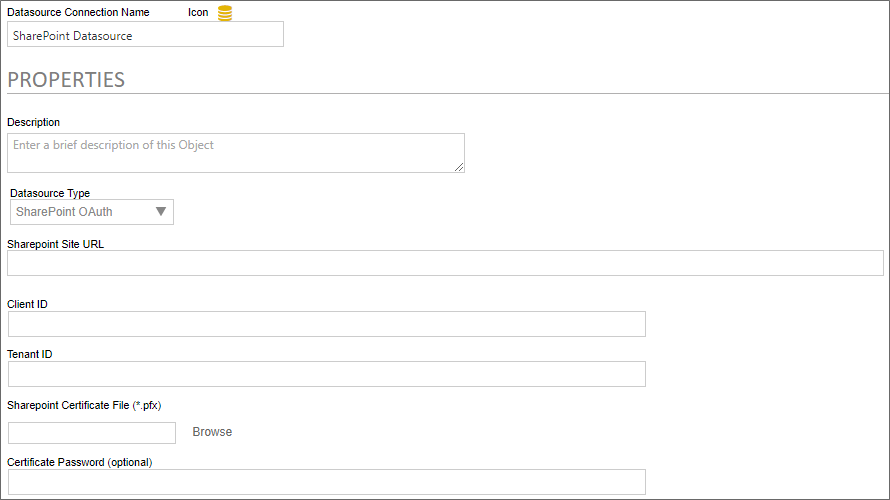
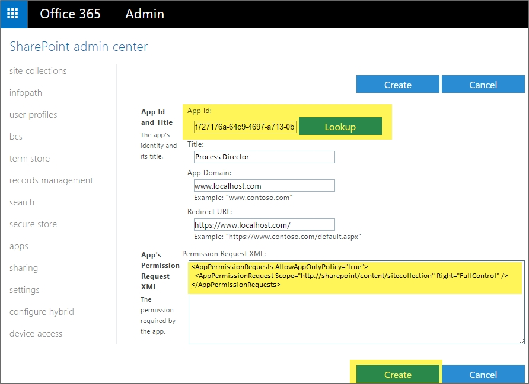
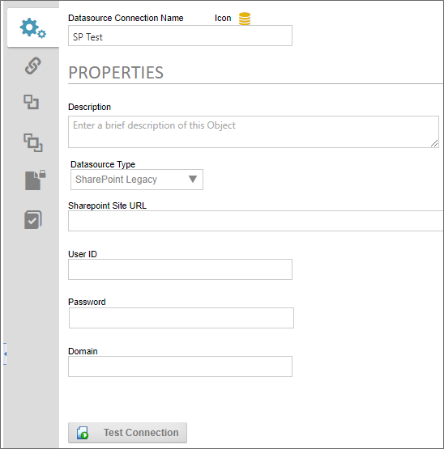

This update to the SharePoint Datasources will require updating the SharePoint Custom Tasks!
This update to the SharePoint Datasources will require updating the SharePoint Custom Tasks!With the implementation of Microsoft's move to Modern Authentication, using the Microsoft identity platform, logging into cloud-based versions of SharePoint is no longer possible by simply using a user name and password. Legacy installations that user older versions of SharePoint may still do so, but SharePoint has largely implemented an OAuth-based authentication scheme, with additional security provided by the use of encryption certificates.
In Process Director v5.44.1000, Modern Authentication for SharePoint was implemented using the SharePoint OAuth Datasource, which only gives access to SharePoint at the Tenant (organizational) level.
For Process Director v5.44.1103, The SharePoint OAuth Datasource was renamed to SharePoint OAuth (Tenant), while a new Datasource SharePoint OAuth (Site), was added to give access to SharePoint at the Site level, rather than at the entire tenant.
The existing SharePoint Datasource, which uses the simple username/password authentication scheme, is still available for customers who are using older versions of SharePoint. This legacy authentication method should be relevant to only a very small minority of customers, and has been renamed to SharePoint Legacy.
This update to the SharePoint Datasources will require updating the SharePoint Custom Tasks!
 A PDF file for end-to-end Azure OAuth configuration can be found here: Configuring Azure OAuth (PDF Download)
A PDF file for end-to-end Azure OAuth configuration can be found here: Configuring Azure OAuth (PDF Download)
Modern Authentication provides much more secure access to SharePoint, but does require a more complex setup process. To set up Modern Authentication between SharePoint and Process Director, you must first create and register an Azure Active Directory (AAD) application. The System Administrator's Guide has instructions for creating the AAD application in the Configuring Azure for Process Director Integration topic.
Once you've created the AAD Application, you can begin the process for configuring SharePoint Online.
To configure the AAD application to use SharePoint with Process Director, you'll need to perform the following configuration steps:

Now that the application has been fully registered in Azure, and the appropriate SharePoint API permissions have been set, you can create the SharePoint OAuth Datasource in Process Director. Be sure to keep the Azure window open, however, as you'll need to transfer some information from Azure to configure the SharePoint OAuth Datasource. Ensure you've opened the Azure Active Directory admin center window to the Overview tab of the App registrations page of your Process Director integration app. In this example, we'll use the "Test SharePoint OAuth" application we used in the steps above.



In addition to the standard Description property, setting the Datasource Type property to SharePoint OAuth enables configuration of the connection properties listed below.
The fully-qualified URL that connects to the SharePoint installation.
The value of the Application (client) ID property contained in the App Registration screen in Azure.
The value of the Directory (tenant) ID property contained in the App Registration screen in Azure.
A Content Picker than enables you to browse to and upload the certificate (.PFX) file to Azure.
The password that you configured for the certificate (.PFX) file when you created it.
Configuring the SharePoint OAuth (Site) Datasource is far less complex than configuring the tenant-level Datasource, and requires no certificate to be created or uploaded to Azure. To add Process Director as an application in your Azure Active Directory portal at the Site level, complete the steps below after signing into your Azure portal (portal.azure.com):
https://mytenant.sharepoint.com, replacing “mytenant” with the appropriate name.https://mytenant.sharepoint.com/_layouts/15/appregnew.aspx.https://mytenant-admin.sharepoint.com/_layouts/15/appinv.aspx. 
<AppPermissionRequests AllowAppOnlyPolicy="true">
<AppPermissionRequest Scope="http://sharepoint/content/sitecollection" Right="FullControl" />
</AppPermissionRequests>In a Process Director Content List folder, select Data Source from the Create New menu.
Supply a Name and click OK to open the new Datasource definition.
Set the Datasource Type drop-down to "SharePoint OAuth (Site)".
Add the SharePoint Site URL for your SharePoint Online installation.
Add the Client ID (AKA Application Id) and Client Secret from SharePoint that you set aside in the steps for Configure SharePoint Site Permissions above.
Click OK then select the Update item from the OK menu at the top right corner of the page to save the configuration.
Click theTest Connection button to test your connection to the SharePoint site.
A successful test means that your Datasource is correctly configured and is connecting to the SharePoint site correctly.
Congratulations! Assuming that you've correctly followed the instructions above, you've now configured both SharePoint Online and Process Director. You can now use this Datasource and the SharePoint Custom Tasks in Process Director to integrate your SharePoint sites and data with Process Director.
For connections to pre-OAuth versions of SharePoint, the SharePoint Legacy datasource type enables you to create a datasource connection to the SharePoint server.

There are four properties to configure to create this datasource.
The Sharepoint Site URL property enables you to enter the fully qualified URL of the Sharepoint server to which you wish to connect.
The User ID must be the user ID for a valid SharePoint User, while the Password property will be the password for the specified user. The Domain property is the SharePoint domain that contains the specified user.
Once you've configured the datasource, you can click the Test Connection button and a message banner will appear, notifying you whether the connection was successful.
To see more information about different Datasource Types and their configuration, please refer top the following topics: